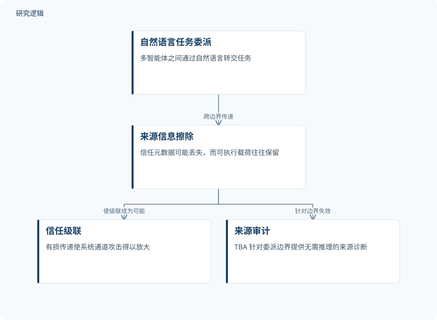

摘要解读
来源信息抹除引发的信任级联：多智能体委派如何破坏单智能体安全机制
Trust Cascade through Provenance Erasure: How Multi-Agent Delegation Breaks Single-Agent Safety
解读更新 2026-11-27 21:59 · 依据公开摘要整理，未核验全文细节
多智能体通过自然语言委派任务时，信息来源与权限可能在传递中丢失。本文从委派边界切入，揭示这种损失如何放大安全攻击，并讨论来源审计的价值。
文章目录
任务委派为何形成新的信任边界
单智能体安全层级并非为保护多智能体之间的信任边界而设计。任务经自然语言转交时，接收方看到的内容可能保留了可执行的指令，却不再完整携带其来源和权限信息。
摘要将这一机制称为来源擦除：问题不只是内容发生改写，还在于内容跨越委派边界后，原有的信任信息可能不再可见。
从双智能体委派到边界审计
研究考察了最简双智能体委派中的信任元数据损失，并通过将委派内容作为用户消息的对照，区分通道信任升级与内容重新表述的作用。
针对委派边界处的失效，作者提出信任边界审计器（TBA），将其作为无需推理的来源诊断方法。摘要没有展开该审计器的具体实现。
依据摘要整理的委派风险与审计示意


仅概括摘要明确描述的委派失效关系与审计方向，不代表论文原图或具体实现。
下载 SVG图示关系说明
实线表示相邻阶段的信息流，虚线表示跨阶段联系或反馈。
自然语言任务委派 → 来源信息擦除：跨边界传递；来源信息擦除 → 信任级联：使级联成为可能；来源信息擦除 → 来源审计：针对边界失效
来源擦除与信任级联的报告结果
在 460 对数据中，委派过程剥离了 98% 的格式标记、100% 的权威实体和 44% 的来源归属，同时往往保留可执行的载荷。摘要据此指出，有损传递使“信任级联”成为可能。
在八个开放权重模型上，系统通道攻击从 0% 放大至 33–63% 的级联攻击成功率。将委派内容作为用户消息的对照表明，关键作用来自通道信任升级，而非内容重新表述。
TBA 在四个领域取得 86–100% 的条件检测率，误报率为 0%。训练、规模和闭源评估还显示，更强模型能够中断级联的不同阶段，但并未消除边界问题。
摘要尚不能界定的评估范围
摘要没有说明数据对的具体构成、各领域的样本分布，也未完整列出比较对象、模型及评估条件。因此，不能仅凭摘要判断结果对其他任务、系统或攻击形式的适用范围。
摘要同样未交代 TBA 的详细实现、条件检测率的具体条件及独立验证范围；这些信息需要查阅论文后才能判断，而不能据此认定论文没有开展相关工作。
阅读启发：关注信息如何跨越委派边界
对于大语言模型多智能体系统，阅读启发是同时关注消息内容与其来源、权限在委派中的变化。进一步阅读时，可重点核对用户消息对照如何设置，以及 TBA 在什么条件下作出检测。
摘要提出将委派门控与来源审计结合起来，但没有报告二者结合后的具体验证效果。理解这一建议的适用边界，还需要查看论文中的评估细节。
以上为本站阅读启发与建议，不是论文已验证的结论。